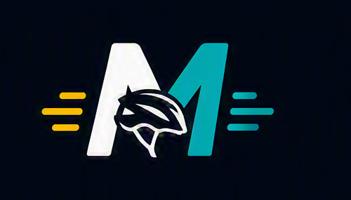
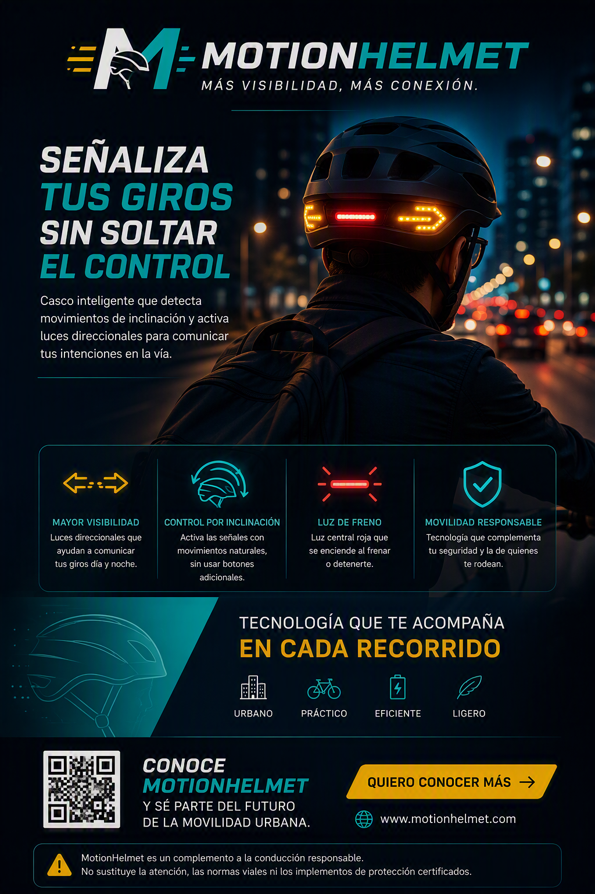
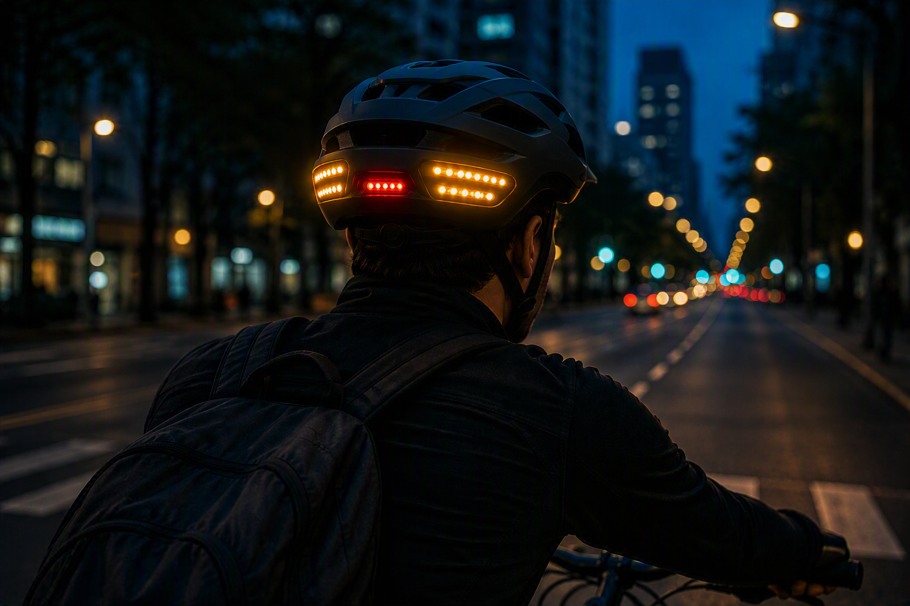
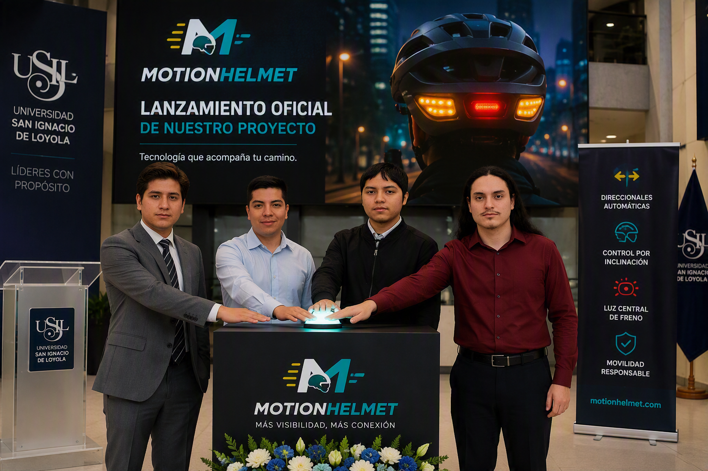

MotionHelmet@motionhelmet · Publicación conceptual

@motionhelmet Señaliza tus giros sin soltar el control.
#MotionHelmet #CiclismoUrbano
MotionHelmet detecta inclinaciones configuradas y activa luces direccionales como apoyo visual para la comunicación del ciclista.
Quiero conocer más
Luces para comunicar la intención de giro.
Sensores que reconocen movimientos configurados.
Direccionales ámbar y luz roja central.
Direccionales laterales ámbar y luz central roja inspiradas en la señalización vehicular.
Moverse en bicicleta por la ciudad exige atención constante. Al acercarse a una intersección o prepararse para girar, el ciclista necesita comunicar su intención a conductores y peatones. Sin embargo, las señales manuales pueden ser menos visibles durante la noche, bajo condiciones de tránsito intenso o cuando el entorno demanda mantener un mayor control del manubrio.
MotionHelmet propone una alternativa complementaria: un casco inteligente que reconoce movimientos de inclinación previamente configurados y activa luces direccionales. Así, un gesto sencillo se transforma en una señal luminosa que ayuda a hacer más clara la intención de giro. Su propuesta integra sensores e iluminación en un accesorio pensado para ciclistas urbanos, estudiantes y repartidores que recorren la ciudad diariamente.
La novedad está en una interacción intuitiva que evita depender de un control manual adicional. El sistema detecta, interpreta y señaliza, manteniendo una experiencia tecnológica, deportiva y fácil de comprender. MotionHelmet no reemplaza las señales viales, la atención permanente ni los equipos de protección certificados. Su función es acompañar las prácticas de conducción responsable.
La bicicleta forma parte de la movilidad cotidiana de estudiantes, trabajadores, repartidores y otras personas que se desplazan por la ciudad. Durante estos recorridos, comunicar una intención de giro es una acción importante para favorecer la convivencia entre ciclistas, conductores y peatones. Las señales realizadas con los brazos cumplen esa función, pero su visibilidad puede variar según la iluminación, la congestión de la vía, la distancia y la atención de quienes circulan alrededor. En este contexto surge MotionHelmet, una propuesta conceptual de casco inteligente que busca complementar la señalización del ciclista mediante luces direccionales activadas por movimientos de inclinación previamente configurados. El proyecto no se presenta como una garantía de seguridad ni como sustituto de las normas viales. Su propósito es explorar una interacción práctica entre el movimiento del usuario, los sensores y la iluminación aplicada a la movilidad urbana.
Un ciclista necesita mantener el control de la bicicleta, observar el entorno y anticipar las acciones de otros usuarios de la vía. Cuando se aproxima a una intersección debe, además, comunicar hacia dónde se desplazará. En situaciones nocturnas o de tránsito intenso, una señal manual podría no ser percibida con claridad. Esta afirmación describe una necesidad considerada por el equipo, pero su frecuencia e impacto tendrían que verificarse mediante observación, entrevistas con ciclistas o pruebas de campo. También se plantea que añadir controles manuales al manubrio podría aumentar la cantidad de acciones requeridas durante el recorrido. Este es otro supuesto del proyecto que debería evaluarse con usuarios antes de afirmar que una alternativa por inclinación resulta más cómoda. MotionHelmet parte de estas situaciones para proponer un apoyo visual integrado al casco, sin eliminar la responsabilidad individual de conducir con atención.
La propuesta está dirigida principalmente a ciclistas urbanos. Dentro de este público se consideran estudiantes, repartidores y personas que utilizan la bicicleta como medio de transporte habitual. Estos perfiles pueden recorrer vías con condiciones diferentes y, por eso, no se debe asumir que todos tienen las mismas necesidades. Un repartidor podría realizar trayectos prolongados, mientras que un estudiante podría usar la bicicleta solo en determinados horarios. Asimismo, factores como el clima, el tipo de casco, la postura y la infraestructura vial pueden influir en el uso del producto. Por ello, el equipo plantea a estos grupos como público objetivo inicial, no como usuarios ya validados. Para conocer mejor el contexto sería necesario realizar entrevistas, identificar movimientos naturales de la cabeza y analizar qué inclinaciones pueden distinguirse de las acciones normales de observar el tránsito.
MotionHelmet propone incorporar sensores de inclinación y luces direccionales en un casco para bicicleta. Su funcionamiento conceptual se divide en tres momentos. Primero, el sensor detectaría un movimiento definido por el sistema. Después, un componente de control interpretaría si ese movimiento corresponde a una intención de giro. Finalmente, se activaría la luz direccional asociada durante un periodo determinado. Estas características son propuestas de diseño y no resultados de un prototipo validado. Antes de implementarlas se tendrían que definir los ángulos de inclinación, la duración del gesto, el mecanismo para cancelar la señal y la forma de evitar activaciones accidentales. También sería necesario decidir si la configuración se realiza directamente en el casco o mediante una aplicación. La interacción debe ser sencilla, pero esa sencillez solo podría comprobarse con pruebas de usabilidad.
El primer beneficio esperado es aportar una señal luminosa adicional que ayude a comunicar la intención de giro. El segundo es permitir una interacción sin depender de un botón manual adicional, ya que la activación se basaría en movimientos previamente configurados. El tercero es integrar señalización e iluminación en un elemento que el ciclista ya utiliza como protección. También se espera que la propuesta resulte fácil de comprender: detectar, interpretar y señalizar. Sin embargo, estos beneficios son expectativas del proyecto y requieren validación. Será necesario comprobar si las luces son visibles a distintas distancias y condiciones, si los gestos se reconocen correctamente y si el usuario comprende cuándo la señal está activada. Una posible mejora sería incorporar una confirmación discreta, visual o sonora, siempre que no genere distracción. Cualquier decisión tendría que priorizar la comodidad y una comunicación clara.
El proyecto presenta limitaciones técnicas y de uso que deben reconocerse desde el inicio. Un movimiento normal para observar el entorno podría confundirse con una orden, por lo que el sistema necesitaría mecanismos para reducir activaciones involuntarias. La autonomía de la batería, la resistencia al agua, el peso añadido, la distribución de los componentes y el mantenimiento son variables aún no definidas. También debe verificarse que una modificación del casco no afecte su estructura ni sus certificaciones. MotionHelmet no debe reemplazar las señales exigidas por la normativa aplicable, y las reglas concretas tendrían que consultarse en fuentes oficiales antes de una implementación real. Finalmente, la propuesta requiere pruebas con usuarios y evaluación en entornos controlados antes de considerar su uso en vías públicas. Reconocer estas limitaciones permite presentar el proyecto con transparencia y evita atribuirle resultados que todavía no han sido demostrados.
MotionHelmet combina una necesidad de comunicación vial con una propuesta tecnológica basada en sensores de inclinación y luces direccionales. Su valor potencial se encuentra en transformar un movimiento configurado en una señal visual complementaria, manteniendo una interacción sencilla y coherente con el ciclismo urbano. No obstante, el proyecto se encuentra en una etapa conceptual. Sus beneficios, comodidad y funcionamiento deben evaluarse mediante investigación con usuarios, desarrollo de prototipos y pruebas controladas. Diferenciar los hechos generales de los supuestos y de las características propuestas ayuda a construir una idea responsable y verificable. El siguiente paso consiste en conversar con ciclistas, identificar gestos adecuados y elaborar un prototipo básico que permita medir la precisión de la detección. Conoce MotionHelmet y acompaña el desarrollo de una alternativa orientada a una movilidad más visible, conectada y consciente.
Registra el movimiento.
Reconoce la dirección.
Activa la luz.

Somos un grupo académico que desarrolla una propuesta de movilidad inteligente enfocada en mejorar la comunicación visual del ciclista. La imagen representa una simulación del lanzamiento del proyecto.
Formulario demostrativo.